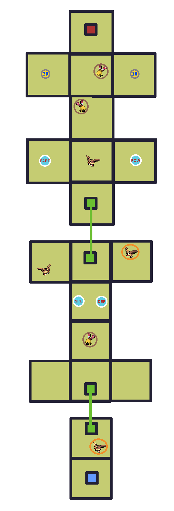

Gauge


Chimecho (1%)
Check out WarriorGallade's post on this Mission for more specific tips.
| Rank | AP | Slates |
|---|---|---|
| S | 5 | Pidgey (90%) Forretress (10%) |
| A | 4 | Chatot (100%) |
| B | 3 | N/A |
| C | 2 | N/A |
| Pokémon | Quantity | Group | Friendship Gauge |
AP | Slates | |
|---|---|---|---|---|---|---|
|
|
Pidgey | 4 | Flying | 64 | 1 | N/A |
|
|
Chingling | 3 | Psychic | 134 | 1 | Chingling (99%) Chimecho (1%) |
| Pokémon | Group | Friendship Gauge |
Agitated Gauge |
AP | |
|---|---|---|---|---|---|
 |
Forretress | Steel | 640 | 61 | 4 |
Text of this section & map image are taken from WarriorGallade's post on the subject, supplemented with information from the official Prima guide book, and condensed/reorganized slightly. Used with permission.

Legend:
This level is straightforward. Capture four Pidgey, but watch for angry Chingling, whose musical notes have surprisingly large range. This mission uniquely unlocks all powerups without needing multi-person switches. These are worth collecting, especially if you haven't grinded yet (though the ideal grinding mission comes later; if you must grind now, pick one you can reliably S-rank for a shot at the boss's slate). Note: Styler-move icon chests only matter for multiplayer (sharing the effect with other players). When playing solo, any Pokémon can open any chest for the same powerup. Once you've collected everything and all four Pidgey, head to the red tile.
Two key things to watch for. First, close-range assists are viable, but be careful not to let your Partner Pokémon get hit by the shock wave attack. Second, its untelegraphed explosion attack has real surprise value. If your partner is poised to strike as it lands, they'll likely get caught in the explosion. Patience is important here. Get used to the explosion attack pattern, as it reappears later on a more dangerous boss.
Forretress' attacks are:
Surprisingly easy thanks to full powerup access, letting you outperform your level. Achievable on the first try if your partner avoids all hits, though it can be close.
Altissimo's Notes: I was able to S-rank this first try at level 3. I tried with both Torchic and Piplup and found that they were pretty similar: Torchic does more damage but Piplup's slowing effect is useful for more manual looping. I had some trouble lining both partners up well for a hit.
Piplup works well: its slow effect staggers Forretress' hops, increasing time between tremor attacks. Torchic would also be a good fit, but mission-target Pokémon never drop slates, so you can't get Torchic until S-ranking the previous mission, which is unlikely this early. As with Vileplume, it's fine to return once you have more partner options.